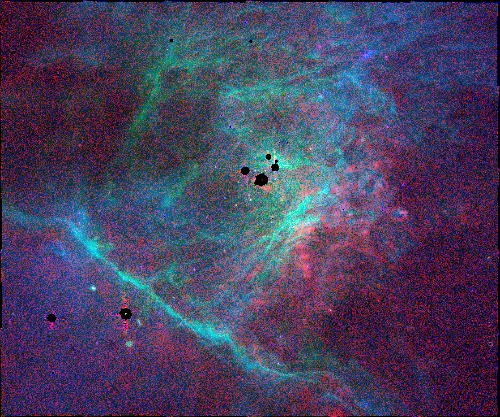
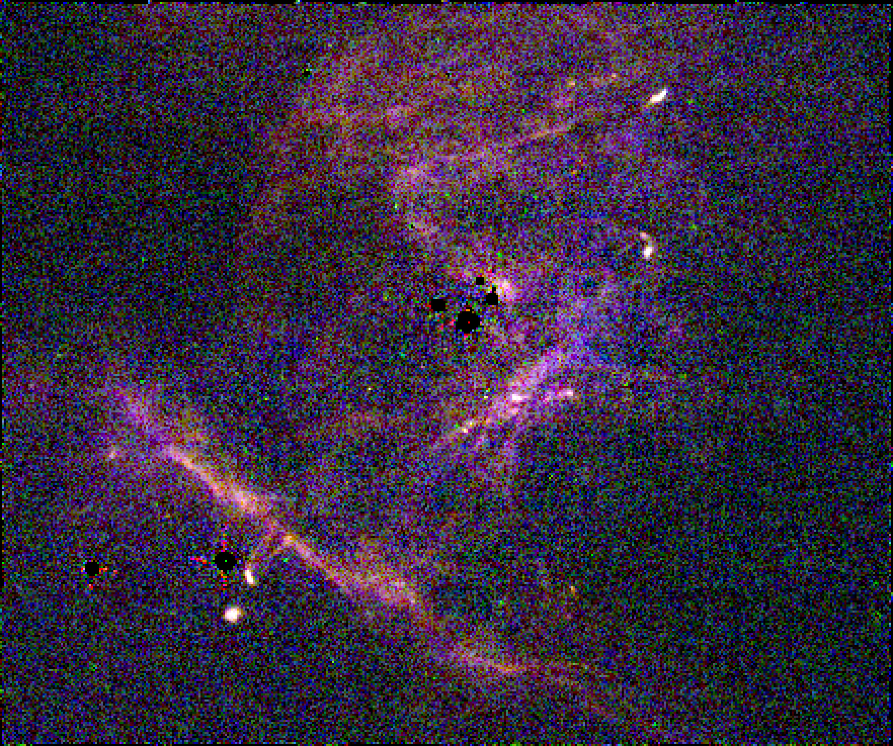
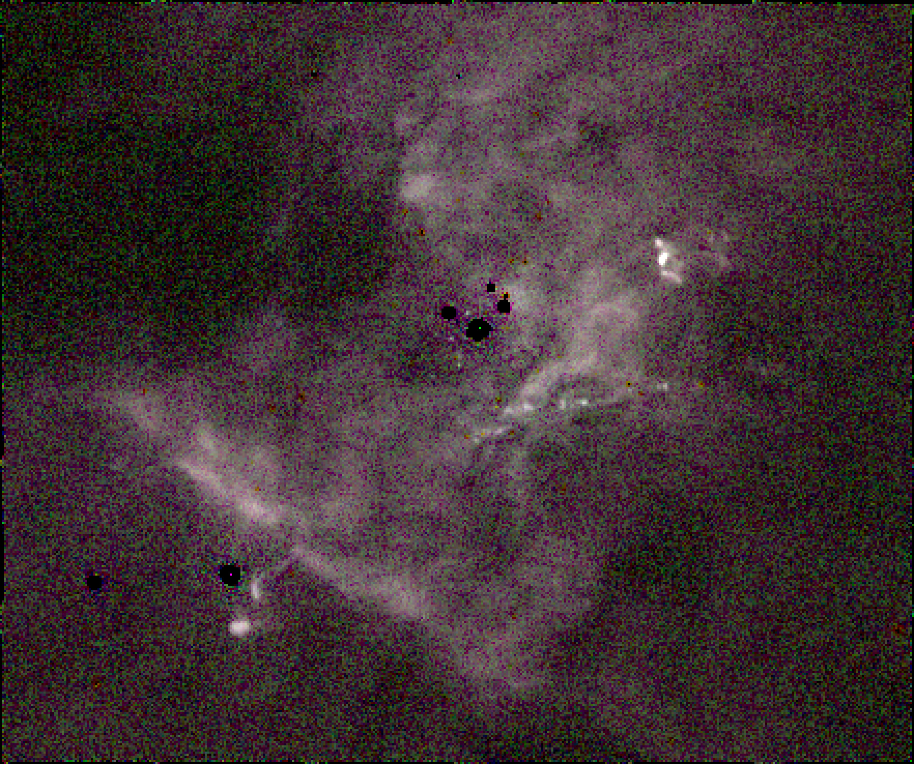
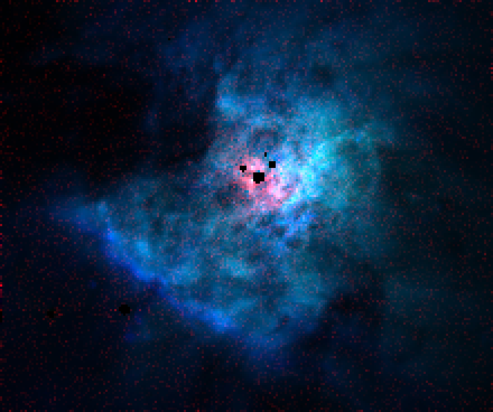
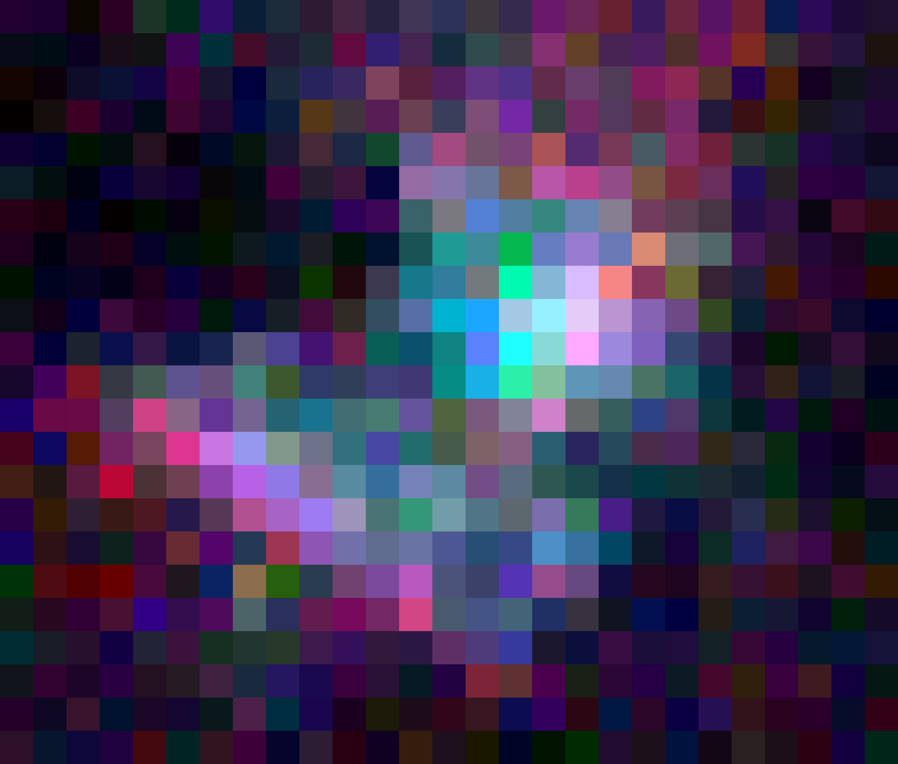
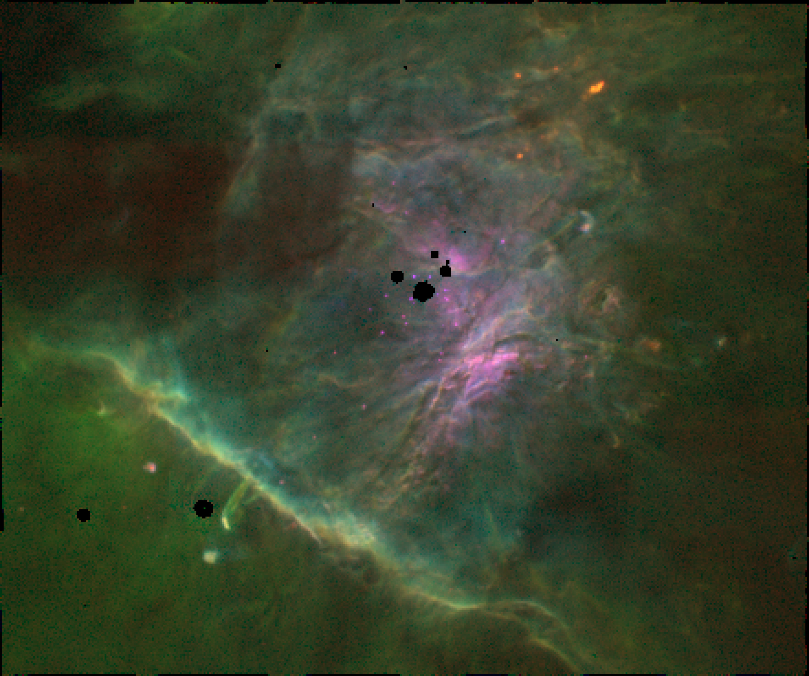
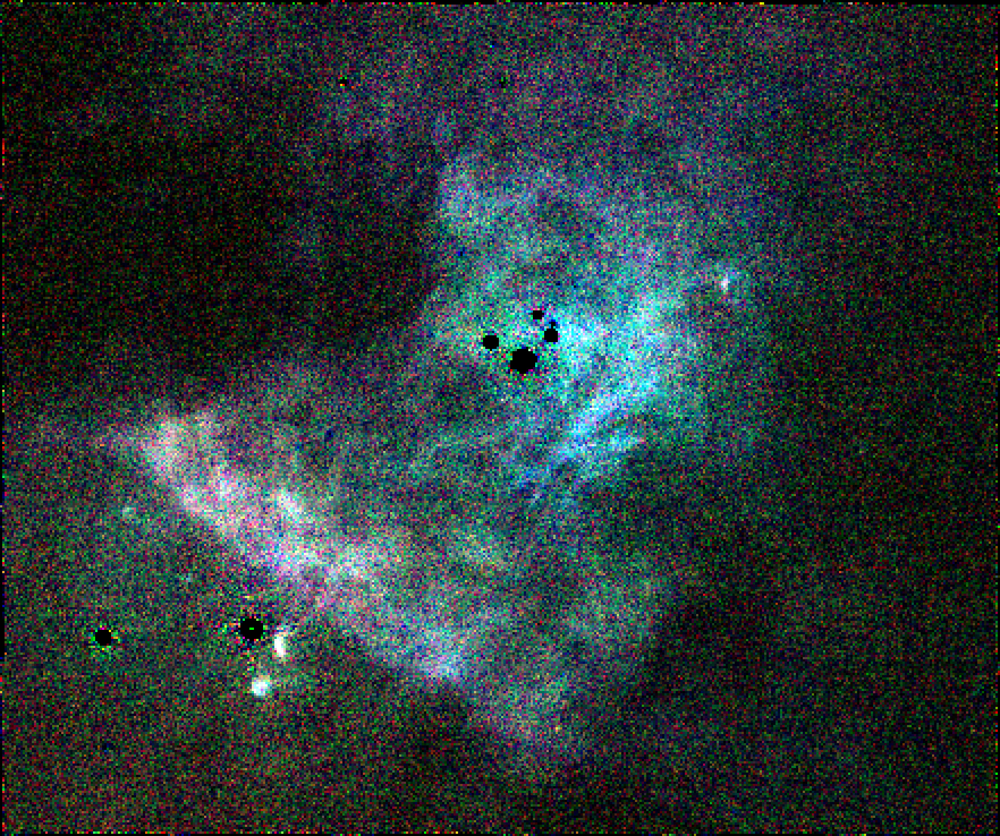
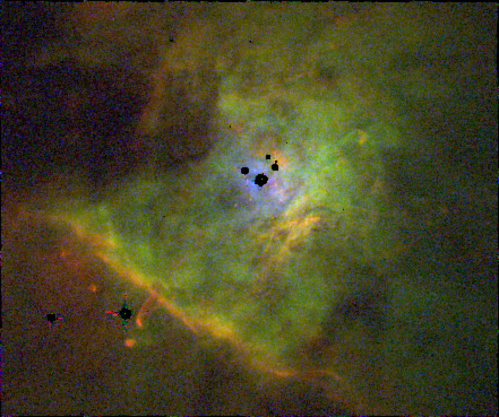
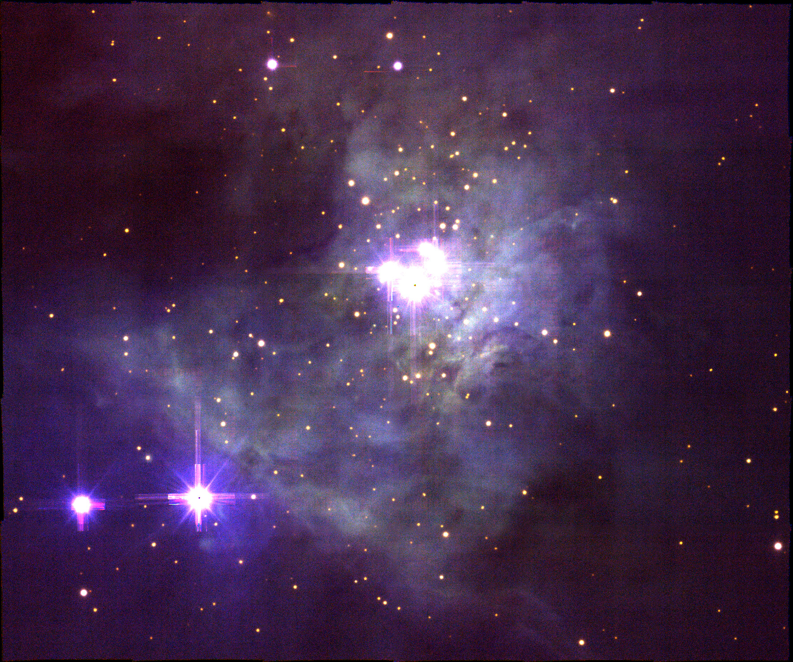
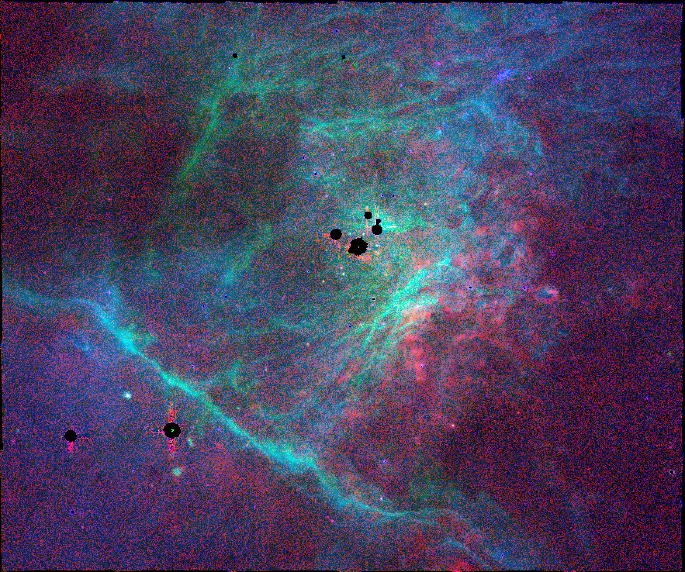

Project Planning
Table of Contents
- 1. Short term goals
- 1.1.
[4/11]Skype call Nashville+2- 1.1.1. DONE Make little cubes to cover borders between the wavsecs
- 1.1.2. DONE
[4/4]Estimate noise in MUSE maps - 1.1.3. DONE Improve presentation of histograms and put in draft paper
- 1.1.4. DONE Investigate upward bias in fuzzing + binning
- 1.1.5. STARTED Analyse apparent and real t^2 as function of brightness
- 1.1.6. STARTED Discuss [Fe III] knots
- 1.1.7. STARTED
[2/3]Make some color images of the line maps - 1.1.8. STARTED Generate line maps for the new lines I added to the table
- 1.1.9. TODO Do extinction correction for all lines
- 1.1.10. TODO Look at noise behavior with binning for "constant" ratios
- 1.1.11. TODO Pad images to multiple of 256 before binning
- 1.2. Skype call Nashville+3
- 1.1.
- 2. Medium term goals
- 2.1. TODO Improved robust measure of scale
- 2.2. TODO Make profile cuts perpendicular to the Bright Bar
- 2.3. TODO Repeat the fuzzing for the WFC3 data
- 2.4. TODO Deal better with sky subtraction
- 2.5. TODO Write script to generate figures of MUSE maps
- 2.6. TODO How can we deal with the systematic pattern "noise"
- 2.7. TODO Generate maps with constant signal-noise
- 2.8. TODO Improve continuum subtraction in extracting lines
- 2.9. TODO Calculate maps line-of-sight depth of emission zones for different ions
- 2.10. TODO Fit Gaussians to blended lines in MUSE data
- 2.11. Write up WFC3 calibration material
- 2.12. TODO Reorganise Latex documents
- 2.13. TODO Write up Dust extinction complications stuff
- 2.14. TODO Write up the CEL-ORL T indicator stuff for O++
- 2.15. Write about plane-of-sky t^2 theory
1 Short term goals
1.1 [4/11] Skype call Nashville+2
1.1.1 DONE Make little cubes to cover borders between the wavsecs
- The window used in the line extraction is 24 Ang wide and sometimes this straddles two different wavsec sections
- One way to deal with this would be to make separate little cubes covering +/- 12 Angstrom either side of the dividing lines
1.1.2 DONE [4/4] Estimate noise in MUSE maps
[X]Use the error cube from the original FITS file- Need to do this on server (or maybe on hypatia)
- I now have the cubes on hypatia (or on their way from nil)
- I have put them in the
BigFiles/folder, which is excluded from Dropbox - They are 6.8GB each = 47.6 GB all together
- There is not enough disk space on my laptop for them
[X]Make fuzzed versions of the line maps[X]First I refactored extract-em-line.py to use windows of the cube[X]Then I do a version that fuzzes each window first- I am doing 10 fuzzes of each line, which takes about 45 sec per line on my iMac
[X]5192 is a special case, since it straddles two wavsecs - use the F%$7M window instead, but I need to extract that from the big variance cube- Lines I have fuzzed :
- Reddening: H I 6563, 4861, 9229
- Te: [S III] 6312, 9069, [N II] 5755, 6583, [Ar III] 5192, 7751, [O I] 5577, 6300
- Ne: [Cl III] 5518, 5538, [S II] 6731, 6716, [Fe III] 4702, 4658
- Constant: [O III] 5007, 4959, [Ar III] 7136, [N II] 6548, [O I] 6364
- Other: [Cl IV] 8046, [C I] 8727
[X]Propagate the variance through all the data reduction steps[X]First multibinning- There might be an issue here with the fuzzing producing a bias towards higher brightness in the binned maps
- I think this is because the binning masks out negative pixels, which is not appropriate for the weak lines (added task to fix this)
[X]Then calculation of ratios[X]Then extinction correction[X]Then calculation of Te, Ne
[X]Look at Δ T, Δ N and so on as function of brightness and binning- Where the Δ's are the std among the different fuzzies
- This is done in the section Delta Te, Ne from the fuzzing where we produce fits files of (Δ T / T) and log(N'/N)
- Then the histograms are plotted in the section Fuzzy Deltas distribution histograms where I have used the same plotting range as in Te - Ne distribution histograms so that they can be directly compared
- Separate task: Improve presentation of histograms and put in draft paper
- Repeat for the "constant" ratios, to check that the fuzzies correctly predict the march towards the correct value as the binning is increased
- This has been moved to its own task
- Original note Then we can fuzz the line maps by adding Gaussian noise.
- Actually it would be best to fuzz the data cubes directly. And then to follow exactly the same steps with the fuzzed data. We can then calculate the pixel by pixel differences between T from fuzzed and original cubes. The dispersion in this is then our best estimate for the noise contribution to t-squared.
- We can also then use this to generate maps with a guaranteed signal to noise by using multi scale binning. Important here in the case of ratios to use the same mask hierarchy for all lines that contribute to the final quantity.
- This also now has its own task
1.1.3 DONE Improve presentation of histograms and put in draft paper
- Use color to distinguish the real data from the fuzzing estimates of noise
1.1.4 DONE Investigate upward bias in fuzzing + binning
- Weak lines after binning are brighter in fuzzed versions
- Presumably due to masking out negative pixels, which eliminates the negative part of the noise
- I have modified multibin-map.py from the section Multi-resolution MUSE line maps so that it no longer masks out negative pixels in the line maps
- I have rerun the rebinning for the regular and fuzzed maps
- Then rerun all the following steps
- Things are much improved
- The [Cl III] density now behaves much more reasonably in the faint parts. It no longer tends to a constant value
- We have also eliminated the high apparent [N II] temperatures in the Dark Bay
- Other weak lines are also now much better, such as [C I] 8727 and [Cl IV]
1.1.5 STARTED Analyse apparent and real t^2 as function of brightness
- Modify the histogram plotting programs to calculate mean and variance for each brightness bin
- And maybe plot mean +/- sigma on the graphs (although that might get too fussy)
- Decompose the total t^2 into the (brightness-weighted) average over the variances within each brightness bin plus the variance in the mean values between the brightness bins
- Check that this works out OK for the total apparent t^2
- Then we can subtract off the noise variance (obtained via fuzzing) from each brightness bin and recalculate the total t^2 to get the noise-corrected value for each degree of spatial binning
- Plots of partial t-squared in section Compare the observed and fuzzed variances in Te,Ne
- It turns out that we need to use robust statistics because the variance is too sensitive to wings of the distribution
1.1.6 STARTED Discuss [Fe III] knots
- In the [Fe III] maps we see enhanced emission from jets and shocks (due to increased gas phase Fe abundance following dust destruction in shocks)
- These should be compared with the WFC3 F469N image, which has an important contribution from the 4702 line
- From Orion S we see two linear chains of knots
- PA114 flow
- Probably associated with the strange [S II] bright tongue coming from 143-353 and then continues WSW through 159-402 (west side of this knot just caught in WFC3 field) and 165-406
- On the other side to ENE (PA294) there are knots at 118-345 and 116-345, seen in WFC3 image and in MUSE line map.
- Before getting to these there is a fainter knot at 126-346
- There are W-facing [N II]-bright bowshocks wrapping around each of these.
[X]Need to check if this is a cataloged HH flow- They might possibly be related to HH507 (main bow at 109-347) but I think not. HH507 has lower ionization and is at PA315 according to BOM00 (see their Fig 22).
- In OD15 the proper motion of 118-345 and other related knots is discussed in Sec 5.12.2., entitled Shocks near but Probably Unrelated to HH 507 so it looks like Bob agrees with me!
- OD15 Table 6 gives Vt = 46, 53, 40, 48 and PA278, 279, 298, 269 for knots at 118-346, 116-346, 116-344, which all fall within the [Fe III] knots in the F649N image
- Interestingly, there are other motion features, slightly below at 116-348 and 118-348, which have similar POS velocities, but no [Fe III] emission at all
- OD15 gives the mean PA as 284, as opposed to 294, but given the uncertainties in the proper motions I think this is consistent
- OD15 mentions the possibility of connection to the blueshifted SiO from Coup 554
- But Coup 554 is at 135.6-355.3, whereas the [Fe III] knot chain points to 143-353 as the source (DR 1186, ZRK 15, 142.9-353.1)
- OD15 also mentions the possibility of connection to HH269
- That seems unlikely since the PAs are different
- OD15 also talks about the knot 126-346, but in section 5.6, which is about HH 1127
- However 126-346 is clearly not part of HH 1127
- Tab 6 gives Vt = 40 at PA270
- It is also shown as 125.5-346.5 in Fig 41, where it looks clearly to be part of same flow as 118-345
- MUSE has a possible further knot at 091-340
- OD15 has motions measured for 090-339 and 090-340 of Vt = 21, 52, 39 and PA284, 274, 304 - this is consistent with being the same flow
- This flow is unlikely to be driving HH 203 unless it has bent to the south
- On the other side to ENE (PA294) there are knots at 118-345 and 116-345, seen in WFC3 image and in MUSE line map.
- This flow is likely unrelated to the PA120 filament starting around 152-358 that may also pass through 149-355 (high T filament) and might have its source in 146-351 (near-IR source). This PA120 flow is the perfect candidate for driving HH203
- Probably associated with the strange [S II] bright tongue coming from 143-353 and then continues WSW through 159-402 (west side of this knot just caught in WFC3 field) and 165-406
- PA090 to PA093 flow
- probably associated with HH529
- knot at 152-353 corresponds to a flat shock just to E of the corkscrew jet
- OD15 has Vt=89 PA087, which cis in the right direction
- further E there is a very compact knot at 160-353, but that is probably the proplyd 159-350, knot related to the flow
- on the W side there is a knot at 143-352
- OD15 has a very slow-moving knot there: 143-351 with Vt = 8 at PA284
- The contested knot at 137-352
- It is knot(!) clear whether this is part of the PA114 or PA090 flow.
- The alignment seems equally good with either of them
- not true see below: certainly PA090
- The alignment seems equally good with either of them
- It is the brightest [Fe III] knot of all
- It has a strange morphology in the F469N image (it is poorly resolved in the MUSE maps)
- It looks like a west-pointing comma-shaped bowshock with a line slashed across the S wing of the bow
- But it can also be seen in the other filters, such as F673N, where it looks more like it is the superposition of two bowshocks, an upper one heading almost due W (PA270) and a lower one, heading more at PA260
- It appears in OD15 as 137-352 with Vt = 49 at PA271
- The shock just above it 137.3-350.2 is discussed in sec 5.12.6 and is classified as the first knot in HH1151 - other knots are 125.5-346.5 and 094-336
- Note that 137.3-350.2 itself does not show [Fe III] emission, but 125.5-346.5 certainly does - it is the same as 126-346 discussed above!
- Revisionist version
- Some of the above classification is probably wrong
- Better assignment of knots to flows is here
- Also, I did the same for the [Fe II] knots here
- I have several apparent groupings of the knots along straight monopolar or bipolar lines
- But I am still not entirely convinced
- Partly due to looking at the proper motions

- The proper motions make it look like the HH529 corkscrew is coming from 145.7-350.8 (HC209 radio source)
- Also that the westward knots at 138-351 and 137-352 might be coming from the same source - it looks like their proper motion is close to due W (PA270) or even slightly southward (PA260). So they are certainly not related to the
- Partly due to looking at the proper motions
- Orange flow at PA110 seems to correspond to HH 1149 from OD15
- This shows an offset between the [Fe III] and the [Fe II] knots, where [Fe II] is consistentlydisplaced a bit fiurhter from the Trapezium
- It is knot(!) clear whether this is part of the PA114 or PA090 flow.
- PA114 flow
1.1.7 STARTED [2/3] Make some color images of the line maps
[X]This is done in the section Grab color images from ds9[X]The channels are as follows:-  (bin002)
- red
- C_I-8727
- green
- O_I-8446
- blue
- N_I-5199
- (no term)
- Shows fluorescent emission from neutral gas just behind the ionization front in blue-green and collisional neutral carbon emission from deep in the PDR in red
- (no term)
- Note offset of [C I] emission behind the i-front at the Bright Bar
- (no term)
- Also bright filament pointing down SSW from Orion S
-  (bin004)
- red
- Fe_II-8617
- green
- Fe_II-7453
- blue
- Fe_II-5262
-  (bin004)
- red
- Fe_III-4658
- green
- Fe_III-4702
- blue
- Fe_III-5270
- (no term)
- In principle 4702/4658 is a density indicator but it is very noisy
- This looks much better in the Manu PPAK data
- But the results are consistent - range of 0.2 to 0.35
- (no term)
- We see diffuse emission from the nebula (pink tint)
- Annoyingly, this is an intermediate ionization, unlike any other ion stage. It is higher ionization than [N II], [O II], but lower ionization than [S III], [Ar III], [Cl III]
- (no term)
- Emission from jets and knots - discussion was getting out of hand so broken out into a new task: Discuss {Fe III} knots
-  (bin008)
- red
- Cl_IV-8046
- green
- O_III-5007
- blue
- He_I-6678
-  (bin064)
- red
- N_II-5952
- green
- N_II-5942
- blue
- N_II-5932
-  (bin004)
- red
- O_I-6364
- green
- S_II-6731
- blue
- O_II-7330
-  (bin004)
- red
- Si_II-5041
- green
- Si_II-5056
- blue
- Si_II-6347
-  (bin004)
- red
- Cl_II-8579
- green
- Cl_III-5538
- blue
- Cl_IV-8046
-  (no binning)
- red
- continuum-H_I-8438
- green
- continuum-Cl_IV-8046
- blue
- continuum-O_II-4650
-  (bin002)
[ ]Add descriptions to figure captions
1.1.8 STARTED Generate line maps for the new lines I added to the table
- Most importantly [Ar IV]
- From looking at the Manu PPAK results for {Ar IV}, the distribution is similar to [Cl IV], but it is slightly more extended
- I also have a lot more [Fe III] lines in the blue
- And the stellar absorption lines too
[X]This has to be done onhypatiaor onnilsince I have removed the big data cubes from my laptop- The [Ar IV] 4740 line looks great - very similar distribution to [Cl IV]
- Shows the proplyd bowshocks very well
- We also see [Ar IV] 4711 contamination in the He I 4713 map
- The proplyd bowshocks show up in that too
- The three semi-forbidden Ca I] lines look very strange
- The red one 9095 looks like fluorescence, but 9052 looks like it comes from the i-front and 7890 like it comes from intermediate ionization gas
- Could 7890 be contaminated with something else? Looks a bit like [Fe III]
- The red one 9095 looks like fluorescence, but 9052 looks like it comes from the i-front and 7890 like it comes from intermediate ionization gas
- The red C II 7231 7236 permitted lines are very strong
- Also show up the proplyd bowshocks and very strong in the Big ARc as expected
[ ]Now I need to do rebinning for them
1.1.9 TODO Do extinction correction for all lines
- This means first settling on a reddening curve
- Simplest approach is to use Hb/Ha and then apply Blagrave to everything
- pyneb.extinction.red_corr.RedCorr(law='CCM89 Bal07') could help
- I think they mean
Blainstead ofBal
- Of course, there are issues with that since E(Hb-Ha) plus R_V=5 reddening law seems to underpredict the extinction, at least in the dark bay
1.1.10 TODO Look at noise behavior with binning for "constant" ratios
- Such as 6363/6300, 6583/6548, 5007/4959, etc
- This will be a clear test that the fuzzing procedure is correctly estimating the noise contribution to line-ratio variations
- It does require that I have the general reddening correction working
1.1.11 TODO Pad images to multiple of 256 before binning
- This is so that all the binned maps are the same size,
- which would look nicer
- and would avoid having to cnotinually align to WCS in ds9
1.2 Skype call Nashville+3
2 Medium term goals
Holding area for tasks that will get moved to Short term goals
2.1 TODO Improved robust measure of scale
- We need a robust measure so we are not too sensitive to fat tails!
- Currently we use the interquartile range (IQR)
- Another simple possibility would be the median absolute deviation (MAD)
- These are equivalent (IQR = 2 MAD) for symmetric distributions, but are different if there is non-zero skew
- The problem with both of these is low "efficiency" for Gaussian distributions
- We see this in the fact that the robust partial t^2 looks noisier than the regular t^2 for high binning
- Supposedly, Rouusseuw and Croux (1993) have better measures
- But they are more complicated
2.2 TODO Make profile cuts perpendicular to the Bright Bar
- Every other paper does this, so why not
- To make things more interesting, we could "correct" for the Ne, Te variations
2.3 TODO Repeat the fuzzing for the WFC3 data
- We need to use the ERR array from the original data
- Look into the astropy affiliated CCD analysis packages to see if they might be of any use
2.4 TODO Deal better with sky subtraction
- This task demoted in importance because it turns out that it was masking out noisy negative values that was causing most of the problems wit faint lines
- But this is still important for the [O I] lines, particularly 5577
- Plot weak line brightness against similar ionization strong line brightness
- Look for an obvious floor to the weak line brightness to give estimate of the sky brightness
- Subtract from line maps before taking ratios
- See also How can we deal with the systematic pattern "noise"
- If we could fix that at the same time it would be great
- Note that this issue seriously effects the [Cl III] 5518/5538 ratio
- The extinction in the Dark Bay can be clearly seen in the ratio, which makes no sense
- This is because there is a constant added to both line strengths
- It is the reason why the [Cl III] density appears to tend to a constant value of about 1300 as the surface brightness tends to zero
- The extinction in the Dark Bay can be clearly seen in the ratio, which makes no sense
2.5 TODO Write script to generate figures of MUSE maps
- Use WCSAxes or APLpy?
- Example of WCSAxes from sinfoni notes
- Looks really easy to use
2.6 TODO How can we deal with the systematic pattern "noise"
- The most obvious pattern is the square grid where the different fields overlap
- In principal, the overlap strips should just be a reduction in noise, but in reality the values themselves change
- Often seen as dark strips on the
- None of this is captured by the fuzzing, so we will be underestimating the total noise contribution to fluctuations if this is important
- Possible solution:
- Take FFT of image
- Look for peak at (6, 5) in k-space and interpolate it away
- Take iFFT to get back to the image
2.7 TODO Generate maps with constant signal-noise
- Multiple binning scales
- For each pixel take least binning with s/n above required value
2.8 TODO Improve continuum subtraction in extracting lines
- Some lines such as O II 4650 complex need more attention
- Need more flexible sizing of line and continuum windows
2.9 TODO Calculate maps line-of-sight depth of emission zones for different ions
- Once we know the Ne, Te (and assuming known elemental abundances)
- And once we have extinction-corrected surface brightness maps
2.10 TODO Fit Gaussians to blended lines in MUSE data
- Only way to get the [Ar IV] density
- Would also help with the O II lines
2.11 Write up WFC3 calibration material
- This will be in an appendix
- We already have the figures sorted
- Copy material from the original draft of the paper
2.12 TODO Reorganise Latex documents
- Split out the future papers stuff into another document
- Split out the source code stuff into another document
2.13 TODO Write up Dust extinction complications stuff
- Show all the different reddening indicators
- Balmer decrement
- Paschen decrements
- Balmer-Paschen decrement
- This is the longest wavelength range (if we used 4861 to 9229)
- With 6563/9229 we have
- 1.41 factor in ratio
- [Ar III] and [O III] ratio
- Small wavelength range, but high S/N and rock solid intrinsic ratio
- [Ar III] 7751/7136 is 9% change in wavelength
- 15% change in ratio between SW cloud and HH 202 region
- [O III] 5007/4959 is a 1% change in wavelength
- 1% change in ratio between SW cloud and HH 202 region
2.14 TODO Write up the CEL-ORL T indicator stuff for O++
- Even though this is not for the current paper, I don't want to forget about it and it would be good to get Manuel's input
2.15 Write about plane-of-sky t^2 theory
- Suppression of fluctuations on scales smaller than LOS depth